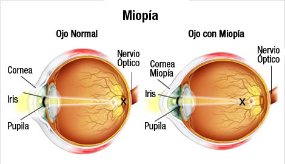
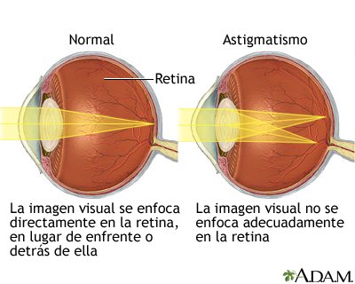
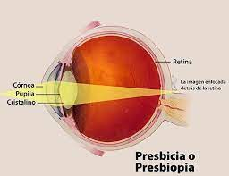

Los problemas de visión más comunes son los errores de refracción, conocidos más comúnmente como vista corta (miopía), hipermetropía, astigmatismo y presbicia. Los errores de refracción ocurren cuando la forma del ojo evita que la luz se enfoque directamente en la retina. El largo del globo ocular (más corto o más largo), ciertos cambios en la forma de la córnea o el envejecimiento del cristalino pueden causar errores de refracción. La mayoría de las personas tiene una o más de estas enfermedades.

Anomalía o defecto del ojo que produce una visión borrosa o poco clara de los objetos lejanos; se debe a una curvatura excesiva del cristalino que hace que las imágenes de los objetos se formen un poco antes de llegar a la retina.

Es un defecto o anomalía del ojo que consiste en una curvatura irregular de la córnea, lo que provoca que se vean algo deformadas las imágenes y poco claro el contorno de las cosas.

Anomalía o defecto del ojo que consiste en la imposibilidad de ver con claridad los objetos próximos y que se debe a la rigidez del cristalino. Es conocida también como "vista cansada"